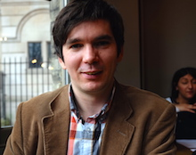

Curriculum Vitae

{kind=link}
Marek Laboš
| Contact | E-mail: nospam.keram@gmail.com Mobile: +44 786 545 0643 |
|---|---|
| Age | 35 |
| Operating systems | Windows XP, Vista, 10, Linux Ubuntu - preferred, OSX |
|---|---|
| Coding and Programming |
Ruby (preferred language) JavaScript (ES6), HTML, CSS - advanced, Java, Python, Lisp - Clojure, ReasonML, C - basics |
| Databases | MySQL (MariaDB), PostgreSQL, CouchDB, DynamoDB |
| Web Servers and Hostings | Apache, Nginx, Heroku, EngineYard, AWS |
| Tools, frameworks and other experience |
Ruby: Ruby on Rails,
Sinatra,
Administrate,
Padrino RB,
Sidekiq,
Grape JS: ES6, RxJS, React, Google Closure, Grunt, Gulp, Webpack, NPM CSS: Foundation, Bootstrap, MUICss Security: Nmap, BurpSuite, Metasploit, Nikto, SQLmap, Skipfish Usability and Accessibility - passion. Absolved training workshop "User testing and development of usable Web" by (H1.cz) Experience with a various third party API and libraries such as leafletjs, d3js, Twitter, Google Maps, Twillio etc.) |
| 2017 - present |
Backend Developer
- at BookingBug Ltd. Working in a cross-functional team on large Ruby on Rails codebase. Mentoring developers on various software engineering practices through regular pair programming, code reviews, leading retrospectives, internal Ruby talks or Lunch and Learn sessions. Working and leading on projects involving webhook integration, design and implementation of modular event based notification system. Maintainance and further improvement of AWS Lambda functions, Grape based API endpoints and more. |
|---|---|
| 2014 - 2016 | Full Stack Web Developer - at Specle Ltd. in London. Working primarily with Ruby (on Rails) and Javascript. Member of a team of six people, maintaining company codebase and developing new features. |
| 05. 2009 - 12.2013 | Self-Employed - work on various web projects as a contractor. Programming and web development in Ruby, Javascript and PHP language. Web application penetration testing via OWASP testing guide, SEO and UX consulting. |
| 04. 2010 - 11. 2010 | Information Systems Programmer and Administrator at National Technical Museum in Prague. |
| 06. 2009 - 11. 2009 | PHP Programmer at Jyxo s.r.o.. |
| 2006 - 4. 2009 | Web Developerat Et Netera a. s.. |
| ... - 2006 | various brigade work (drawing in AutoCad, etc.) |
| 2009 - 2010 | Czech Technical University in Prague Faculty of Nuclear Sciences and Physical Engineering |
|---|---|
| 2001 - 4. 2006 | Slovak University of Technology in Bratislava, Slovakia Faculty of Civil Engineering |
| 1997 - 2001 | Secondary School of Civil Engineering in Nitra |
| 2017 | Presentation about Double Dispatch Design Pattern in Ruby and CSV security vulnerabilities at LRUG (Recorded presentation) |
|---|---|
| 2014 | Presentation about "blackhat" technics in User Experience Web Design (Slides) |
| 2013 | Mentor at Rails Girls Žilina |
| 2012 |
Mini workshop about development and contributions to Progressbar Hackerspace website.
(Slides)
Presentation at Rubyslava about Ruby on Rails web CMS RefineryCMS. |
| 2010 | Presentation at BarCamp Žilina about work in the Technical Museum. (Slides in Slovak language) |
|
English - intermediate (4.5 years living in the UK), Czech - passive (7.5 years lived in the Czech Republic), Slovak - native language |
|
Ultimate Frisbee, Bike, Chess, Go (Baduk), Emacs :)
Books, Photography, Music, Hackathons Supporting Slovak hackerspace Progressbar, New web development trends and technologies. |
|
| Social networks & links | meetups, github, twitter, flickr, last.fm |